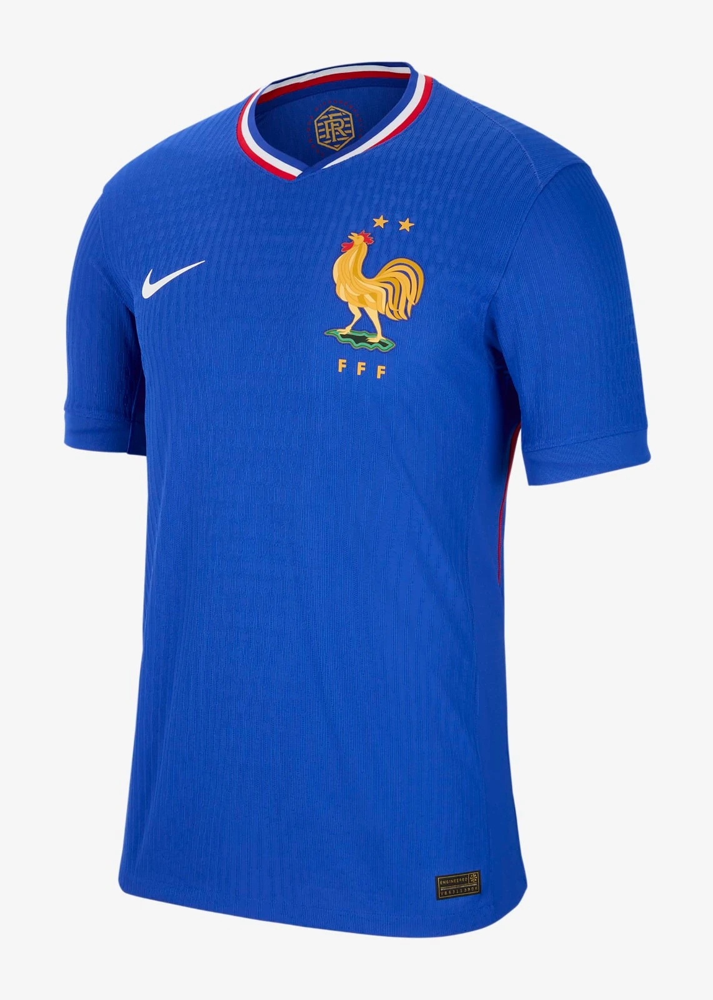

1. Zidane’s Header Brace in the Final
July 12, 1998, Stade de France—80,000 fans roar for France vs. Brazil, the final. Zinedine Zidane, 26, steps up—27th minute, Emmanuel Petit’s corner, Zidane rises over Roberto Carlos, thumps a header past Cláudio Taffarel—1-0. 45th—another Petit corner, Zidane leaps again, nods past Leonardo—2-0. Brazil crumble—Petit scores late, 3-0. France’s first World Cup, home soil erupts.
The stadium shakes—tricolore flags wave; Zidane’s bald head shines under floodlights. “For France,” he says, stoic; coach Aimé Jacquet beams, “He’s our king.” Clips flood TVs—two headers, Taffarel’s dive—Zizou’s night. “He destroyed us,” Brazil’s Dunga mutters; Marcel Desailly, red-carded, still lifts the trophy. “32 years of hurt gone,” Jacquet declares—France’s 62% possession buries the holders.
It’s not just goals—it’s legacy. Zidane’s brace—first final goals—turns him global. “He’s the best,” Pelé says; Ronaldo, muted, nods, “Unstoppable.” Fans rewatch—each leap a masterpiece—1998’s climax, a home hero’s crown. From 0-0 to ecstasy, Zidane’s headers seal France’s reign—Brazil’s dynasty falls in Saint-Denis.
2. Ronaldo’s Final Mystery
Same final—July 12, Stade de France. Brazil’s Ronaldo, 21, Golden Boot locked (4 goals), is the story—until he isn’t. Hours before kickoff, he’s off the team sheet—seizure rumors swirl, teammates stunned. Then he’s back—pale, sluggish. France dominate—Zidane’s brace, Petit’s third—Ronaldo misfires, 3-0. Post-match, whispers grow—fit in the hotel, medics rushing, Nike pressure?
Fans murmur—80,000 see a ghost; Brazil’s bench slumps. “I don’t know what happened,” Ronaldo says later; coach Mário Zagallo shrugs, “He wanted to play.” Clips show it—listless runs, missed touches—X explodes, “What’s wrong with Ronaldo?” “He wasn’t himself,” Rivaldo admits; France’s Lilian Thuram grins, “We took advantage.” No goals, no spark—Brazil’s star fades as France shine.
It’s not a play—it’s a riddle. Ronaldo’s collapse—fit or conspiracy?—haunts 1998. “Health first,” Pelé pleads; Zagallo counters, “He insisted.” Fans rewatch—each stumble a clue—2010 doc “The Mystery of Ronaldo” fuels debate. From world-beater to shadow, Ronaldo’s final flop hands France the crown—1998’s unsolved drama.

3. Nigeria’s Shock Over Spain
June 13, 1998, Stade de la Beaujoire Nantes—33,257 fans for Nigeria vs. Spain, group stage. Spain strike—Fernando Hierro’s free-kick, 1-0, 21st minute. Nigeria bite back—Mutiu Adepoju heads in Jay-Jay Okocha’s cross, 1-1, 24th. Raúl puts Spain ahead, 2-1, 47th. Then Nigeria roar—73rd, Garba Lawal’s shot deflects off Andoni Zubizarreta, 2-2; 78th, Sunday Oliseh rockets a 25-yard screamer—3-2.
The crowd erupts—Nigeria’s green wave surges; Oliseh sprints, fists pumping. “A dream,” he grins; coach Bora Milutinović beams, “Pure heart.” Clips flood screens—Oliseh’s thunderbolt, Zubizarreta’s fumble—Spain stunned. “They outran us,” Hierro admits; Okocha’s flair dazzles—Fenerbahçe’s star shines. Nigeria top Group D—Spain, top seed, crash out, 3rd place.
It’s not just a win—it’s an upset. Nigeria’s first World Cup since ’94—ranked 74th—topples 6th-ranked Spain. “We shocked the world,” Kanu says; Spain’s Javier Clemente slumps, “Unthinkable.” Fans rewatch—each goal a jolt—1998’s giant-killing moment. From 2-1 down to 3-2, Nigeria’s Super Eagles soar—Africa’s pride in France.

4. Owen’s Solo Stunner vs. Argentina
June 30, 1998, Stade Geoffroy-Guichard—35,500 fans for England vs. Argentina, round of 16, 1-1, 16th minute. Michael Owen, 18, picks up David Beckham’s pass near halfway—turns, burns past José Chamot, Roberto Ayala. Forty yards, three seconds—slots past Carlos Roa—2-1. England erupt—red and white roar; Owen sprints, arms wide. “Unbelievable,” Glenn Hoddle beams; Argentina’s Diego Simeone mutters, “Too fast.”
Clips flood screens—Owen’s blur, Roa’s dive—1998’s jaw-dropper. “I just ran,” Owen grins; Beckham says, “He’s a kid wonder.” Argentina equalize—Javier Zanetti, 2-2—then Beckham’s red tilts it. Penalties—David Batty misses, 4-3 Argentina—but Owen’s goal shines. “He announced himself,” Alan Shearer says; fans rewatch—each stride a marvel—England exit, but Owen’s star is born.
It’s not a win—it’s a breakout. Owen’s pace—Golden Boot (4 goals) looms—marks him future great. “He tore us apart,” Ayala admits; Hoddle nods, “World-class.” 1998’s teenage bolt—first World Cup goal—echoes beyond defeat. From 1-1 to legend, Owen’s run is England’s pride in France’s summer.

5. Bergkamp’s Quarter-Final Magic
July 4, 1998, Stade Vélodrome Marseille—55,000 fans for Netherlands vs. Argentina, quarter-final, 1-1, 89th minute. Patrick Kluivert nods, Ariel Ortega’s red—10 vs. 10. Then Frank de Boer lofts a 60-yard pass—Dennis Bergkamp, 29, controls with one touch, flicks past Ayala with another, rifles past Roa—2-1. Netherlands erupt—orange waves crash; Bergkamp screams, “Yes!”
The stadium roars—clips explode—three touches, pure art—Roa’s dive futile. “Perfect,” Bergkamp says; coach Guus Hiddink beams, “Genius.” Argentina slump—Netherlands to semis (lose to Brazil on pens). “He killed us,” Simeone admits; De Boer says, “Only Dennis.” Fans rewatch—each touch a painting—1998’s most beautiful goal. “I saw the space,” Bergkamp shrugs—elegance in chaos.
It’s not the title—it’s brilliance. Bergkamp’s strike—third goal of 1998—lifts Netherlands. “He’s a magician,” Johan Cruyff tweets; Roa nods, “Unstoppable.” 1998’s quarter-final gem—first World Cup knockout win for Holland since ’74—shines. From 1-1 to ecstasy, Bergkamp’s magic is France’s summer jewel.